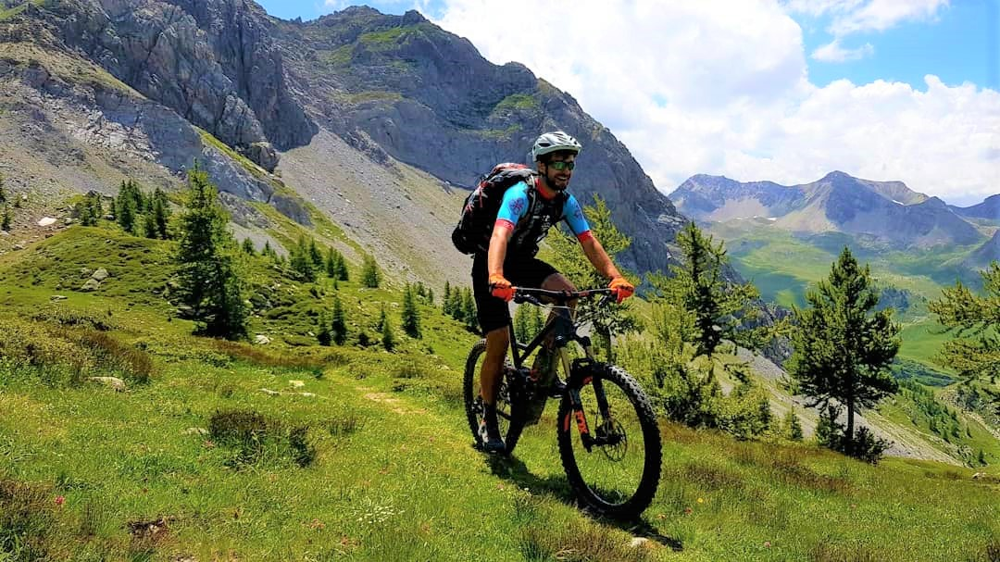

La nostra selezione di tour, divisi per difficoltà e numero di giorni

Per tutti
Tour in E-MTB adatto a principianti!

Per esperti
Tour difficile, per chi ha esperienza di guida in MTB
La valle Maira è lunga e stretta, selvaggia e incontaminata.
Essa nasconde tra le sue vette alcune perle, tra antiche chiese a picco nel vuoto, borgate sperdute e panorami mozzafiato.
Viaggia con noi alla scoperta di questi luoghi, spersi tra cielo e montagne, per perdersi nei suo colori e nei suoi sapori, tra cultura e tradizioni.
Un viaggio in luoghi in cui il tempo sembra essersi fermato, un viaggio per divertirsi, rilassarsi e per tornare a meravigliarsi!
Lassù tra le montagne, diventa tutto più facile... anche essere felici!
Borgate, Chiese, musei e affreschi, alla scoperta di perle nascoste della Valle Maira.
Panorami incredibili, impossibili da dimenticare, impossibili da non fotografare.
Profumi e sapori, alla scoperta della tradizione e della gastronomia locale.
Tour in E-MTB adatto a principianti!
Tour difficile, per chi ha esperienza di guida in MTB
Ecco i nostri contatti per prenotazioni ed ulteriori informazioni!
Nato e cresciuto in Valle Maira, è accompagnatore cicloturistico dal 2018 e istruttore di MTB dal 2021 con AmiBike
+39 3343332773
nicolo.mandrile@gmail.com